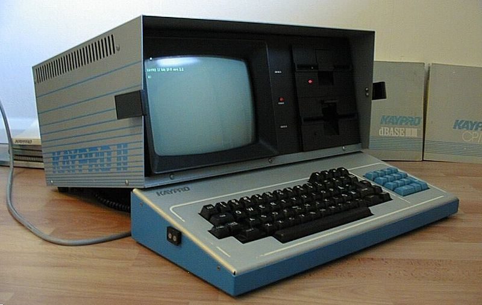

The Why
The sky is not falling, but a change has happened: AI and robots are here and we must learn how to tell them what to do. A ChatGPT Business account is only $25 per employee per month and can substantially boost productivity. A Humanoid Robot will sell for less than the annual cost of a worker earning $15/hour (about $31,200 before employer taxes and benefits), a robot can look far cheaper. Also, New Mexico only has 16 people per square mile making State finances difficult. Together, these realities worry me about the future for my adopted state and for Las Cruces — a city whose people have welcomed me warmly.
The image at left is my first computer, which I bought when I was 23 in 1983. It was a Pre-Historic laptop called a Luggable with the handle under the keyboard by Kaypro. With green text only on a small screen, two 360k floppy drives, but a FULL megabyte of RAM. Even then, owning that machine made me a life long computer geek. I spent many years working in and around technology in Seattle in the mid 1980s, business travel to Hong Kong and China, and supplier relationships in India and Europe.
An accident of birth gave me an above-average IQ — not genius, just sharp. I built a business, kept learning technology as it changed now retired.
My motivation for this work comes from walking through the doors of the Sakya Tibetan Buddhist Monistary in Seattle more than twenty five years ago (sakya.org). By taking vows, I committed to doing no harm and to relieving suffering when I can. I’m not a monk — I’m a fairly lazy lay practitioner — but that commitment is genuine. Small moments, like meeting someone connected to the film Little Buddha, are part of how I stayed connected to that community.